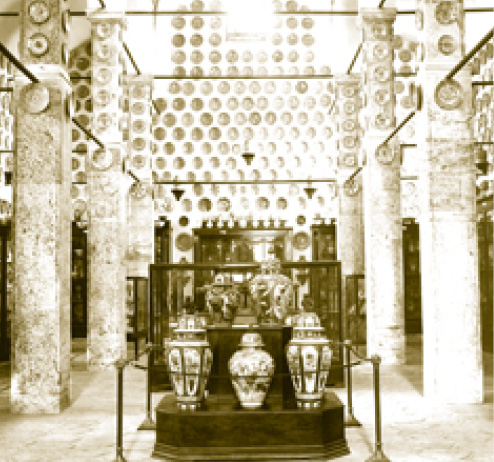

SARAYIN MUTFAĞI-MATBAH-I AMİRE
Matbah-ı amire saray mutfaklarının bulunduğu kısımdır. Osmanlı Sarayı’nın mutfağı her yüzyılda Osmanlı zarafetinin ve zenginliğinin ifadesi olmuştur.
Topkapı Sarayı gibi içinde neredeyse bir ilçe nüfusu kadar insanın yaşadığı müessesenin gıda ihtiyaçları buradan karşılanırdı. Topkapı Sarayı’nda günde ortalama beş bin kişilik yemek yapılırdı. Ulûfe dağıtımında ve cülûs merasimlerinde bu sayı on beş bin kişiyi bulurdu. Pişirilen yemekler sadece saray halkına verilmez; dışarıdan Divan-ı Hümâyûn’a dilekçe vermeye gelenlere, davacılara veya şahitlere de din, dil farkına bakılmaksızın yemek ikram edilirdi. Ayrıca Matbah-ı amire, sarayın civarına da yemek dağıtılan, yemek çıkarılan bir yerdir. Gelen yemeğin önce aşçılar, sonra çaşnigir tarafından nasıl tadılacağı belirlenmiştir ve suikasta karşı bir tedbir olarak düşünülmüştür. Tabii, padişahın önüne gelen altmış çeşit yemeğin her birinin yendiğini sanmamak gerekir. Padişahın bazen baktığı, bazen sadece tattığı bu nefis yemeklerin herhâlde kendisinden sonra protokol icabı başkaları tarafından yendiği açıktır ki bu eski bir Şark ve Türk ananesidir. Kalabalık bir topluluğa yemek hazırlamak için çok büyük mutfaklara ihtiyaç duyulmuştur ki bizdeki Matbah-ı amire büyüklüğündeki bir mutfağın dünya saraylarında bir benzeri yoktur.
Matbah-ı amire önünde yer alan uzun revak üzerinde üç kapı vardır. Bu üç kapıdan ilki Kilar-ı amire’ye, ikincisi Has Mutfak’a ve üçüncüsü Helvahâne’ye açılır ve her kapı açıldığı mekânın ismini almıştır.
Matbah-ı amire kesme taşlarla döşeli yolu ile küçük bir Osmanlı sokağını andırmaktadır. Kilar-ı amire Kapısı’ndan girildiğinde Kilerler ve Yağhâne’ye ulaşılırdı. Burada gıda depoları bulunurdu. Bugün bu binalarda sarayın arşiv ve tekstil deposu bulunmaktadır. Saray kumaşlarının saklandığı bölümün gün ışığı almamasına, oda sıcaklığının ve neminin müsait sıcaklıkta tutulmasına ve tozlanmaya karşı tedbirler alınmıştır. Bu depolarda padişahların, şehzadelerin, saray kadınlarının ve diğer görevlilerin kullandıkları giysiler, Kâbe örtüleri ve Haremeyn’den gelen perdeler gibi paha biçilmez değerde eserler muhafaza edilmektedir. Depolar ziyarete kapalıdır.
Kilar-ı amire’nin karşısında saray mutfağının iaşe işlerine bakan Vekilharç Dairesi vardı. Bu daire günümüzde tamir atölyeleri olarak kullanılmaktadır.
Yağhâne’nin yanında saray aşçılarının namazlarını eda edebilmeleri için ahşaptan yapılmış Aşçılar Mescidi vardı. Mescidin karşısında ise aşçılara ait koğuşlar bulunuyordu. Bu yapılar, günümüzde Topkapı Sarayı Müzesi’nin hizmet binaları olarak kullanılmaktadır.
Matbah-ı amire’nin ilk yapıları Fatih döneminde inşa edilmiştir. Bugün görülen mutfak yapılarının son kısmındaki iki kubbeli odası Fatih dönemine aittir. Sonraki dönemde büyütülen mutfaklarda, 1574’te büyük bir yangın çıkmış; ciddi bir bölümü yanan binaları Mimar Sinan yeniden yapmıştır.
Matbah-ı amire’de genel olarak saray halkına yemek verilirdi. Harem halkının yemekleri ise diğer yemeklerden farklıydı ve ayrı mutfakları vardı. Padişahın yemeği Matbah-ı amire’nin Has Mutfak bölümünde pişirilirdi.
Saray Tatlıları
Matbah-ı amire’nin son kısmı ise Helvahâne’dir. Burada Matbah Emini’ne bağlı bulunan Helvacılar bir bölük hâlinde görev yaparlardı. Vazifeleri sadece helva, hamur tatlıları ve şuruplar hazırlamaktı. Altı usta ile yüz kadar çıraktan meydana gelirlerdi. Kışları gül, misk, gelincik çiçeği, havlican ve dâr-ı fülfül gibi baharattan şeker kestirerek yaptıkları macunu Hünkâr, Divan-ı Hümâyûn üyeleri ve Enderun’un ileri gelenlerine sunarlardı. Hazırladıkları tatlılar arasında özellikle Saray lokması pek nefis ve meşhurdu. Osmanlılarda irmikten tahine, undan pekmeze kadar onlarca çeşit malzeme bu helvahânelerde kullanılırdı. Sarayda yapılan aşureler de çok meşhurdu. Muharrem ayında ballı aşure, şekerli aşure ve süzme miskli aşure pişirilirdi ki bunlardan süzme miskli aşure hünkâr ve Harem halkı için hususi yapılırdı.
Dört bölümden müteşekkil Helvahâne’nin giriş kapısı üzerinde Kelime-i Tevhid yazılıdır. Bu bölümde günümüzde Osmanlı döneminde yemek yapımında kullanılan mutfak eşyaları sergilenmektedir. Eşyaların büyüklüğü; nasıl her gün sarayda binlerce kişiye iki öğün yemek hazırlandığını göstermektedir.

Sarayın müze olarak kullanıldığı ilk yıllarda sergilenen çini ve porselenler
Günümüzde İstanbul ve Yıldız porselenleri ile cam eserlerin sergilendiği mekân Reçelhâne’nin ön tarafı olup eskiden burada Şerbetçiler Mescidi bulunmaktaydı.
Helvahâne Kapısı’ndan sonra mutfak yapılarının karşısında aşçı koğuşları yer almaktaydı. Bu kısımlar sonraki dönemde yıktırılmış ve yerlerine şimdiki sergi binaları yaptırılmıştır.
Osmanlı mutfağında II. Bayezid’den sonra hususen porselen kullanılmaktadır. Aslında bu, Topkapı’daki zengin porselen-çini koleksiyonunun varlığını da izah eder. Mutfak, bugün eşine rastlanmadık bir çini-porselen zenginliğini barındırmaktadır. Kuşkusuz dünyanın sayılı porselen koleksiyonlarından biri Topkapı mutfaklarında sergilenmektedir.
Matbah-ı amire’deki aşçı ve yamakların Osmanlı tarihinde ilginç roller üstlendikleri de bilinir. Haçova Savaşı’nda düşman birliklerine saldıran aşçılar olduğu gibi Naima Tarihi’nde anlatılan bir hâdisede de Divan Meydanı’nda “Biz noksan mevacib (maaş) almayız.” diyen yeniçerilerin ulûfe almayı reddetmesi ve Divan-ı Hümâyûn erkânını taşlamaya başlamaları üzerine Matbah-ı amire aşçılarının ellerinde kepçe, satır ve odunlarla yeniçerileri Divan Meydanı’ndan çıkarttıkları anlatılır. Bu hâdise esnasında Enderun ağaları ve baltacılar da aşçılara yardım etmişlerdir.
Topkapı’da Ramazan İftarları
Ramazanlarda Topkapı’da verilen iftarlar da çok meşhurdu. Osmanlı’da hükümdarın, vezirlerin ve diğer devlet adamlarının iftar ziyafeti vermeleri âdettendi ve hâkimiyet sembolüydü. Her ramazan, vüzera ve ümeraya, bu arada yabancı sefirlere ve gayrimüslim tebaanın ruhani ve cismani reislerine padişahın iftar ziyafeti verdiği malumdur. Bu iftarlar tepeden tabana tekrarlanan bir âdettir. Osmanlı iftarları zengin ve leziz mutfağın teşhir edildiği; fakirlerle sofranın paylaşıldığı mahfiyetkâr, mistik bir sofradır. İftara davet edilen Avrupalılar yedikleri, içtikleri, hele hele gördükleri ve hissettikleri bu mistik havayı anlata anlata bitiremezler. Pek çok seyahatnamede Osmanlı ramazanlarını bütün teferruatıyla bulmak mümkündür. Zaten çeşitli dinler değil, farklı içtimai sınıflar da aynı konakta oruçlarını açmaktadır.
Beşir Ağa Camii
Has Ahur Kapısı’ndan girilen yol üzerinde bulunan Beşir Ağa Camii, Sultan III Ahmed ve Sultan I. Mahmud zamanlarında 29 yıl (1717–1746) Darü’s saade ağalığı görevinde bulunan Hacı Beşir Ağa tarafından yaptırılmıştır. Beşir Ağa, camiin bitişiğine bir çeşme ile hamam da inşa ettirmişti. Hamam, Baltacılar Hamamı olarak da bilinirdi; 1920’lere kadar hizmet veren yapı maalesef günümüze ulaşamamıştır. Camii ve hamam daha çok sarayın dış ocaklarına hizmet vermiştir ki Has Ahur ve Baltacı Koğuşları’nın personeli buralardan en fazla faydalanan kimselerdir.
Cami, sarayın kullanılmadığı dönemlerde çok ihmal edilmiş, çatısı çökmüş bir vaziyette iken 1939’da yapılan yenileme çalışmaları ile kültürümüze yeniden kazandırılmıştır. Tarihçi Abdurrahman Şeref Bey, Beşir Ağa Camii’nde bulunan Hz. Peygamber’in ve dört halifenin isimlerinin yazılı olduğu levhaların bizzat Sultan Abdülmecid hattı ile yazıldığını bildirir. Caminin minaresi Türk İslâm sanatında görülen minare yapılarından çok farklı olup cumba şeklinde tuğla gövdenin üstüne yerleştirilmiştir. Caminin banisi Beşir Ağa Mekke-Medine kadılığı görevinden sonra İstanbul’da vefat etmiş ve Eyüp Sultan türbesinin yanına defnedilmiştir. Türbesi hâlen orada bulunmaktadır.